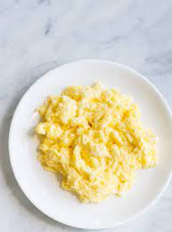

Scrambled egg

Description
Take somes eggs, scrambled them with butterfat, and voilà!
Ingredients
- 3 eggs
- 1 spoon of milk
- 15 grams of butter
- Pepper
- Salt
Steps
- Put all the ingredients in a pan
- Let it cook at low degrees while mixing until it look creamy
Return to homepage